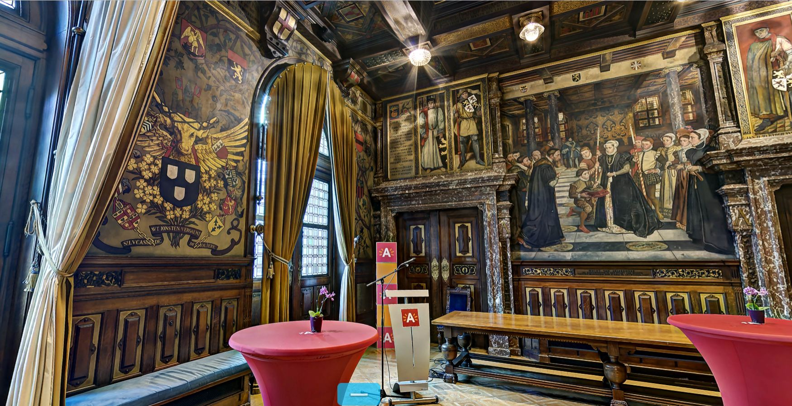
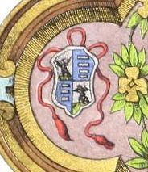
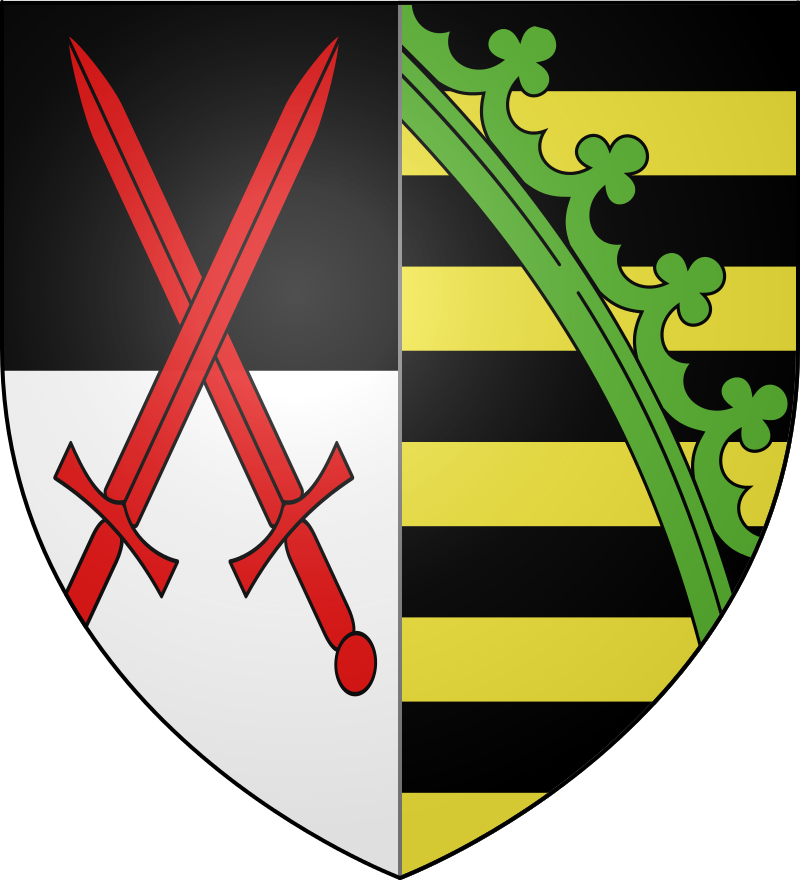
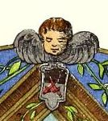
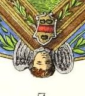
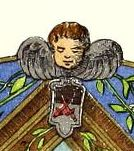
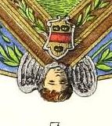

Zoektocht naar de oorsprong en betekenis van een heraldische voorstelling van de rederijkerskamer 'de Violieren' uit Antwerpen In de facebook-group Heraldry of the World postte Ralf Hartemink de volgende afbeelding van een heraldische voorstelling van de Sint Lucas gilde van Antwerpen: Deze afbeelding stelt het wapenschild voor van de gilde van de Antwerpse kunstschilders, omgeven door 11 blazoenen van ambachten die van de gilde afhingen. De plaat XXVI verbeeldt het gildewapen getopt met eenen aanzienden en gevleugelden ossenkop van goud ; helmteeken : de Antwerpsche burcht van zilver ge-evend rechts van eene roos van keel en links
van eene roos van zilver, beide geknopt van goud. Het schild omringd met eene violierenkroon van goud en met verscheidene blazoenen van ambachten die van de gilde afhingen. Wij melden :
Als reactie op het posten van de eerste prent in de facebookgroup, postte de Engelse heraldicus David B. Appleton onderstaande prent met als commentaar:  De plaat XXVII stelt de kenteekens der drie rederijkkamers voor.  In oktober 1560 werd Antoon van Stralen benoemd tot hoofdman van de Violieren, zijn zwager Melchior Schetz werd reeds het jaar ervoor in 1559 als prins aangesteld. 


(uit het boek Wapenboek der Antwerpse Gemeenteinstellingen, sedert de vroegste tijden tot op onze dagen van P. Génard 1883, plaat XXVI )
Centraal staat het eigenlijke wapenschild, azuur drie wapenschilden van zilver,
met als schildhouder een gevleugelde stier. Deze is het symbool voor de evangelist Lucas,
al eeuwenlang de patroonheilige van de kunstschilders.
Deze voorstelling is ook afgebeeld op de rechterwand van de Sint Lucas kapel, één van de straalkapellen in de Onze Lieve Vrouwkathedraal van Antwerpen.
citaat uit boven genoemd boek (via archive.org) :
1: Het schild der goud- en zilversmeden : van azuur met drie koppen of kelken van goud.
2: De banier der glazenmakers : van azuur met verschillende werktuigen van het ambacht gebonden van keel en paalsgewijze geplaatst.
3: Het schild der boekdrukkers : van goud met den arend van sabel, gebekt en geklauwd van keel, houdende met den rechterklauw een zethaak, en met den linker eenen rol papier.
4: De banier der aardenpotbakkers : van keel met drie potten van zilver, de eerste eene pint, de tweede eene kruik, de derde eene kalbasflesch.
5: Het schild der borduurders : van keel met de borduurraam van goud, bekleed met een borduurwerk van zilver beladen met eene van binnen geziene rechter hand van keel omgeven van den hoed met zes rozen, drie van zilver en drie van keel, gebladerd van sinopel.
6: Het schild der vergulders : van keel met het kruiswerk eens zwaards van goud.
7: De banier der tapijtwerkers : van zilver met de van binnen geziene rechterhand van keel.
8: Het schild der knoopenmakers : van keel met de knoopenkaart van zilver beladen met negen knoopen van azuur.
9: Het schild der koffermakers : van keel met het koffer van goud belegd met zilver.
10: Het kenteeken der papiermakers : van keel met de van binnen geziene rechterhand van zilver ondersteund door een omgekeerd zilveren vuurstaal en overtopt met een klaverblad van hetzelfde metaal.
11: De banier der katoendrukkers : van keel met de van binnen geziene rechterhand van zilver.
'A modern version done in grayscale at the Antwerp Archives'. Hij had dit zelf gefotografeerd tijdens een bezoek aan Antwerpen in 2020.

Ook valt het op dat dit eigenlijk het wapenschild voorstelt van de aloude rederijkerskamer 'de Violieren' uit Antwerpen. Deze was ontstaan binnen de Sint Lucas gilde en gebruikte hetzelfde wapenschild.
Met de hulp van enkele heraldici in de facebook-group 'Heraldiek en Genealogie' werd al snel duidelijk dat de kleine wapenschilden toegeschreven kunnen worden aan een aantal bekende adelijke personen uit het Antwerpen van de vroege 16de eeuw.
Zo herkennen we aan de dexter kant (links, heraldisch rechts): van de Werve, van Berchem, van Ranst en Rockox
en aan de sinister kant (rechts, heraldisch links): van Ursel, Schetz, onbekend, van Stralen.
Er zijn dus drie vragen nog op te lossen in deze zoektocht:
ten eerste wat is de oorsprong van deze zwart/wit afbeelding, ten tweede wat is de link tussen deze families en de rederijkerskamer en ten derde van wie is het nog onbekende wapenschild?
Wat de oorsprong van deze zwart/wit voorstelling betreft, blijkt na wat speurwerk dat het hier gaat om een foto op groot formaat, die zich bevindt in de 'zuilenzaal' van het Felix-Pakhuis, de locatie van de Antwerpse archieven.
Omdat het Antwerpse Stadhuis gerestaureerd werd (van 2018 tot 2022), was het niet meer mogelijk voor koppels om te trouwen in de trouwzaal van het Stadhuis, en werd er dus een tijdelijke oplossing gevonden door de trouwplechtigheden te laten doorgaan in de 'zuilenzaal' van het Felix-Pakhuis.
Ter verfraaiing van deze 'zuilenzaal' werd er daarom aan een fotografe gevraagd om, nog voor de restauratiewerken, foto's te nemen in het Stadhuis, waarna deze dan op groot formaat werden afgedrukt en geplaatst in deze zaal op verplaatsbare panelen.
Via de fotografe werd het dan ook duidelijk dat de zwart/wit afbeelding, waar deze zoektocht het onderwerp van is, eigenlijk een foto is van één van de muurschilderingen in de Grote Leyszaal in het Antwerpse Stadhuis. Merk op dat de muurschildering zelf weldegelijk in kleur is uitgevoerd.
de volgende afbeelding geeft alvast een verklaring voor wat betreft de relatie tussen 'de Violieren' en de wapens van Schetz en van Stralen:

(uit: Wapenboek der Antwerpse Gemeenteinstellingen, sedert de vroegste tijden tot op onze dagen van P. Génard 1883, plaat XXVII )
citaat uit boven genoemd boek (via archive.org) :
De figuur 1 vertoont ons het blazoen der St.-Lucasgilde getopt met drie violieren en vergezeld van de kenspreuk : Wt jonsten versaemt.
De figuur 2 stelt het blazoen zelf der Violiere voor : van purper met de violier, gebladerd van sinopel en bloeiende van drie stuks van goud, ondersteund door eenen grond van sinopel.
De figuur 3 bevat een schild insgelijks van purper met den bloempot van zilver bevattende drie violierbloemen van goud, gebladerd van sinopel ; kenspreuk gelijk aan die der voorgaande banier.
De rederijkkamer de Goudbloem draagt van azuur met de goudbloem gebladerd van sinopel en bloeiende van drie stuks van goud, ondersteund door eenen grond van sinopel ; kenspreuk : Groeyende in deuchden
(fig- 4 )-
Het schild der rederijkkamer de Olijftak is van azuur met de duif of den H. Geest van zilver in eene glorie van goud en houdende in zijnen bek eenen olijftak van sinopel. Leus : Aensiet, sic of siet de genade (ecce gratia) (fig. 5).
De figuren 6 tot 8 vertoonen de groote blazoenen uitgevoerd ter gelegenheid van het Landjuweel van 1561. Deze laatsten zijn versierd met de wapens van
den koning van Spanje, van het hertogdom Brabant, van het markgraafschap des H. Rijks en der stad Antwerpen.
Het blazoen der Violiere bevat buitendien de wapens van Melchior Schetz en van Antoon van Straelen, prins en hoofdman der kamer (fig. 6).
Dat der Goudbloem vertoont O.-L.-V. houdende op haren schoot het kind Jesus en gezeten in eenen tuin van goudbloemen. Het bevat de wapens van den keurvorst August van Saksen en van den oud-burgemeester Nicolaas Rockox, den oude.
Eindelijk is het blazoen van den Olijftak versierd met de wapens van den plaatsnijder Jacob Jongelinck en van den burgemeester Jan van der Heyden, allen beschermers, prinsen of hoofdmannen dezer genootschappen.
 



enkele details uit de twee bovenste grote wapenborden:
op het blazoen van de Violieren zien we links en rechts de wapens van Melchior Schetz en van Antoon van Straelen, zijnde de prins en hoofdman van deze rederijkerskamer in 1561,
en op dit van de rederijkerskamer de Goudbloem zien we boven en onder de wapens van keurvorst August van Saksen en van oud-burgemeester Nicolaas Rockox.
Randopmerking 1:
De hier vernoemde Nikolaas Rockox is niet de bekende vriend en mecenas van P.P.Rubens, deze leefde namelijk van 1560 tot 1640.
De Nikolaas Rockox die hier bedoeld wordt (genoemd 'de oude' of sr, leefde van 1514 tot 1577) is de oom van bovenvermelde.
Hij was 4 keer burgemeester van 1555 tot 1575.
Op het grote zwart/wit wapenbord (zie hoger) is zijn wapen afgebeeld als een gekwartileerd wapen, met in eerste en vierde kwadrant het wapen van zijn vader Adriaan Rockox (1460-1540):
" D'or à la fasce de gueules accompagnée de trois feuilles de nénuphar de sinople " (plompenblad)
en in het tweede en derde kwadrant het wapen van zijn moeder Catharina van Overhoff (1486-1549):
"van keel drie leeuwen van goud 2-1 met een hartschild van goud beladen met drie schuinkruisjes van goud"
Beide echtgenoten met hun kinderen zijn trouwens vereeuwigd in de triptiek 'het Laatste Oordeel' van Jan Sanders van Hemessen, dat zich bevindt boven hun graf in de Sint Dimphna-kapel in de Sint Jacobskerk in Antwerpen. Het wapen van Adriaan staat hierop afgebeeld onderaan op het linker paneel, en dat van Catharina onderaan op het rechter.
Randopmerking 2:
Het is misschien op het eerste gezicht opmerkelijk dat in het grote blazoen van de Goudbloem ook het wapen is afgebeeld van de keurvorst August van Saksen (keurvorst 1553-1586).
Een eerste punt is dat het wapen van het keurvorstendom Saksen eigenlijk is als volgt:
In de gouden bul van 1356 werd de keurvorst van Saksen erfelijk benoemd tot Reichsmarschall of Erzmarschall, een van de hoogste vastgelegde erfelijke ambten in het H.Roomse Rijk.
Op officiele plechtigheden draagt hij het Rijkszwaard. Het teken van het ambt, namelijk doorsneden van zwart en zilver twee schuingekruiste zwaarden in keel, wordt mee in het wapen gevoerd.
Een tweede punt is wat de keurvorst van Saksen te maken heeft met de Antwerpse rederijkerskamer de Goudbloem:
De verklaring hiervoor moet misschien gezocht worden in het feit dat de keurvorst van Saksen een hevig beschermer was van Luther en van zijn protestantse leer.
Hij sloot in 1531 in Schmalkalden een verbond met alle Protestantse vorsten en steden, tegen keizer Karel V.
Vervolg van het onderzoek:
Vermoedelijk kunnen dus alle acht wapenschilden die rond het centrale schild zijn weergegeven gelinkt worden aan de rederijkerskamer 'de Violieren' en aan het Landjuweel van 1561. Het zou zeker nuttig zijn om bijkomend onderzoek te doen naar de ledenlijsten van de rederijkerskamer om dit volledig uit te klaren.
Bij gebrek echter aan een lijst van alle hoofdmannen en prinsen van de Violieren, is het in deze fase misschien wel een aanvaardbaar alternatief om eens te kijken naar de lijst van
Burgemeesters van Antwerpen.
Als we deze lijst in detail bekijken voor de eerste helft van de 16de eeuw, dan zien we een aantal personen uit enkele adellijke families verschillende keren terug komen
In zijn artikel "Een open oligarchie? De machtsstructuur in de Antwerpse magistraat tijdens de periode 1520-1555" ( Belgisch tijdschrift voor filosofie en geschiedenis ,Revue Belge de philologie et d'histoire, boekdeel 82 - 4: Middeleeuwse. moderne en hedendaagse geschiedenis , 2004 , pp. 905-934) maakt ook Koen Wouters
een studie over de burgemeesters en schepenen van Antwerpen in deze periode.
Van de zeven wapenschilden die reeds herkend werden, zijn er zes te linken aan adellijke personen die burgemeester geweest zijn rond de eerste helft van de 16de eeuw. Melchior Schetz staat hier dus niet bij, maar zijn link met de Violieren werd reeds hierboven verklaard.
En zo blijft enkel de derde vraag nog op te lossen: namelijk van wie het onbekende wapenschild zou kunnen zijn?

Als we er van uitgaan, omwille van bovenstaande resultaten, dat ook dit wapen verwijst naar een adellijke familie die vaak voorkomt in de lijst van burgemeesters van Antwerpen rond 1561, en die we nog niet genoemd hebben, dan hebben we nog de keuze uit een aantal mogelijkheden:
Naast de zes namen die we reeds gelinkt hebben met de heraldische voorstelling, namelijk: van de Werve, van Berchem, van Ranst, Rockox, van Ursel en van Stralen, zijn er nog namen die vaak voorkomen: Hertzen, van der Meeren, van Spangen, van Halmale, van Crombach, van der Heyden, van Almaras, Draeck, van Liere, Wolffaert, enz ...
Uit al deze mogelijkheden is er maar één naam die ook wat het blazoen betreft bijna overeenkomt met het onbekende wapenschild, 'van keel, een leeuw van goud', namelijk van Halmale.
Het blazoen van de familie van Halmale is : 'in rood bezaaid met blokjes een leeuw, blauw getongd en genageld, alles goud'

Het is dus zeer goed mogelijk dat men in 1870 bij het maken van de muurschildering de gouden blokjes is vergeten.